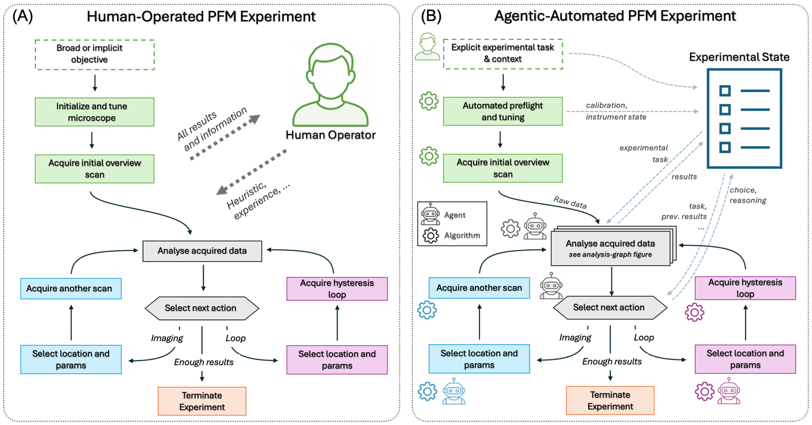
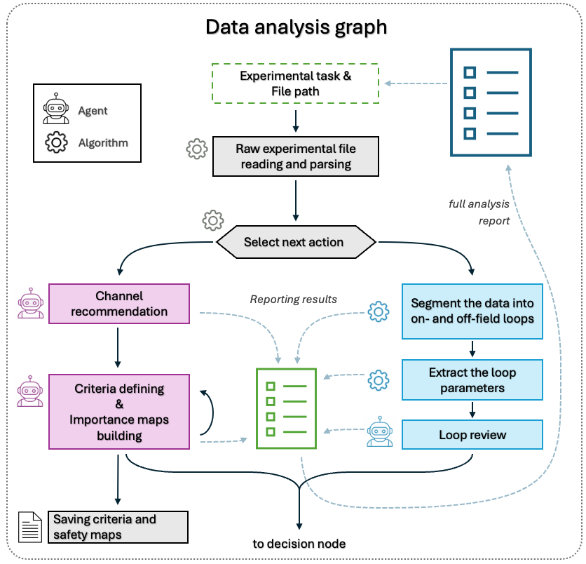
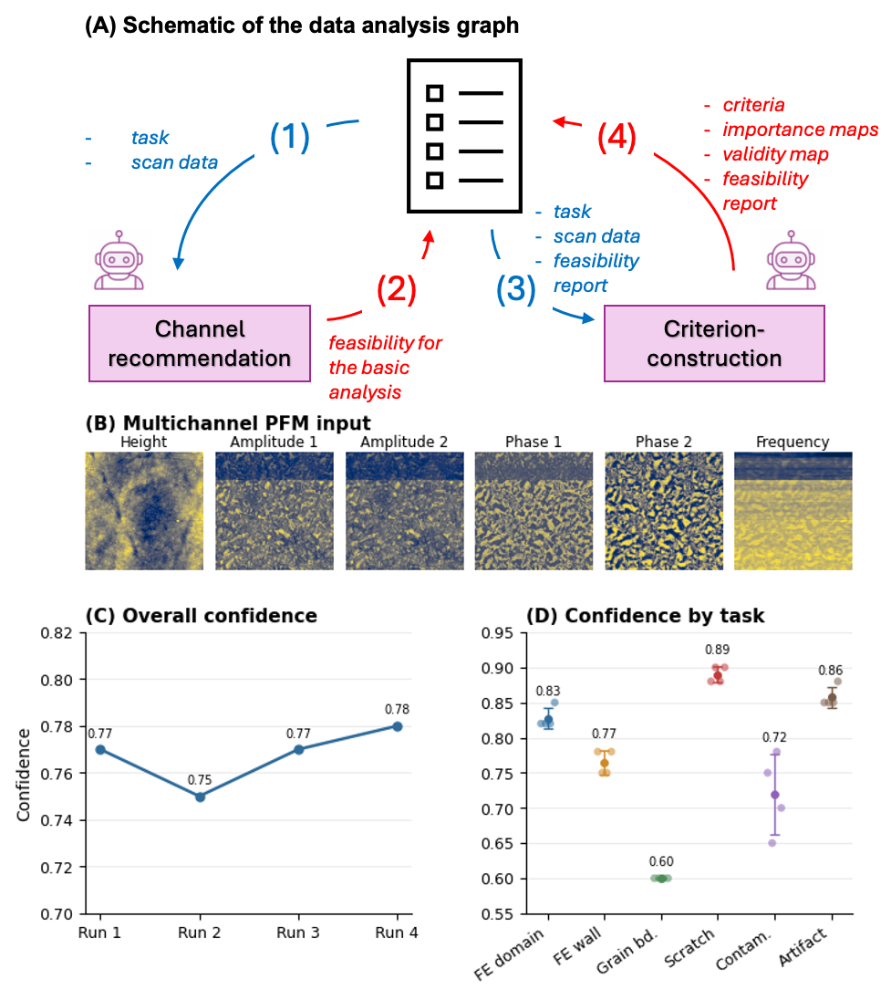
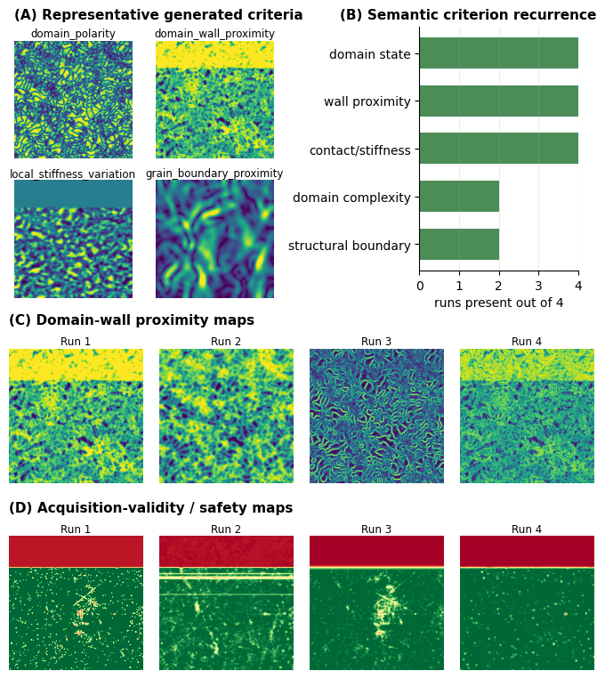
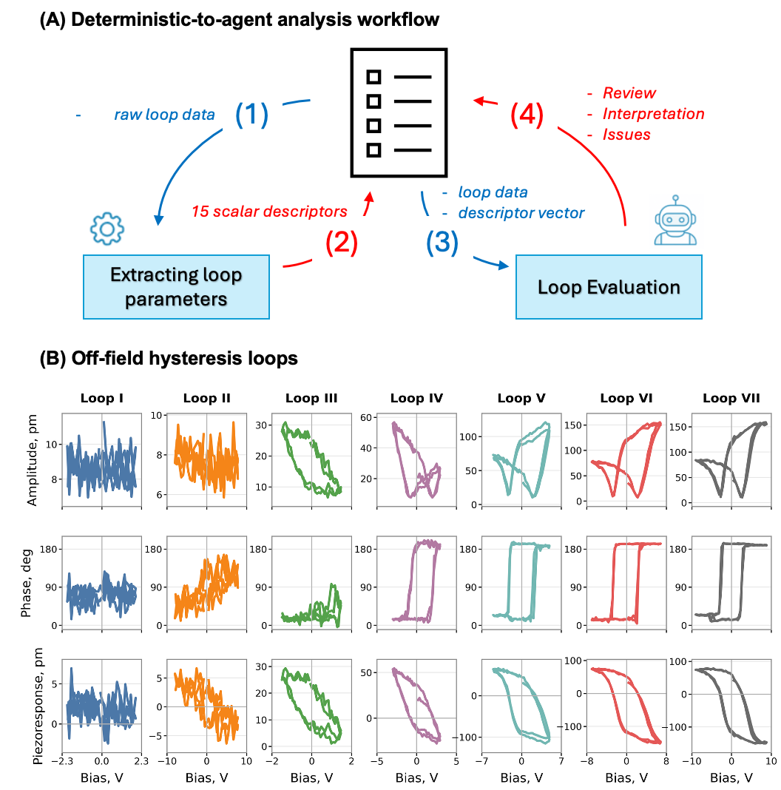
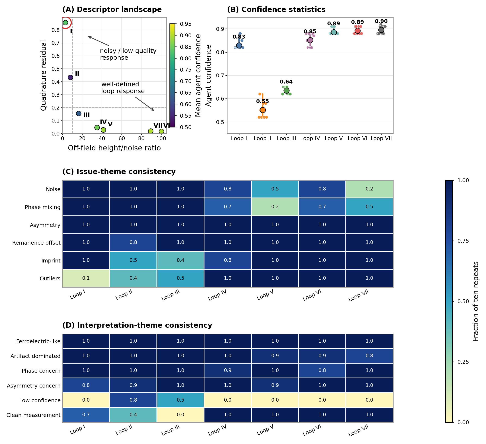
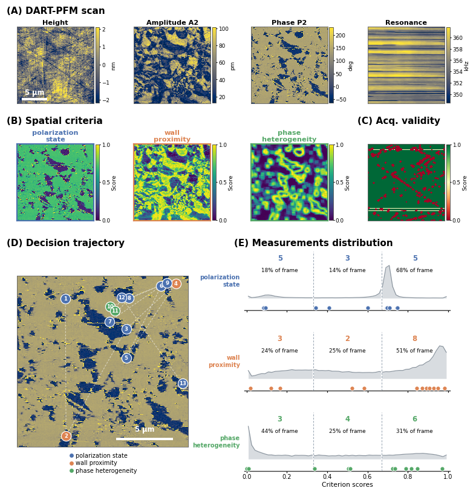
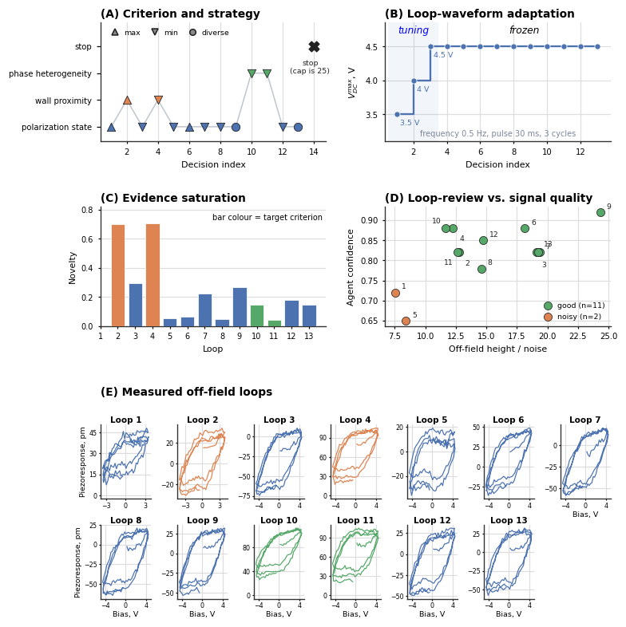
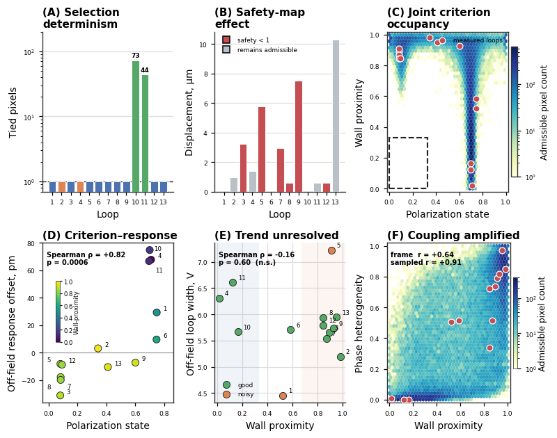

分层SPM自主实验：把科学问题变成选点规则，再让算法可靠地执行
论文原文 ↗原文：Boris N. Slautin、Sheryl L. Sanchez等，Hierarchical automation of scanning probe microscopy through agentic orchestration and algorithmic control，arXiv:2609.04015，2026年预印本。实际读取PDF共32页，含正文、参考文献和补充信息。
扫描探针显微镜（SPM）可以拍出局部结构图，再把探针移到选定位置，施加电压并测量材料响应。机器早已能自动执行这些动作，困难在于中间的科学判断：哪张图反映想研究的结构？哪些位置构成有意义的对照？曲线不好时应提高电压还是换位置？什么时候继续测量只是在重复已有信息？
传统闭环自动化通常要求研究者提前定义描述变量、目标函数和采样策略。本文希望把这一步也放进闭环：只给系统一个宽泛问题——局部畴结构怎样影响极化翻转——由语言模型提出需要比较的环境，再交给确定性算法计算、选点和控制仪器。作者在铁电陶瓷中完成一次自主实验，展示了这套分工怎样取得局部谱，也怎样发现当前视野缺少一个关键对照。
一、方法怎样做：图像负责定义环境，局部回线负责测响应
先理解测量对象，才能理解智能体在决定什么
作者使用7/65/35铅镧锆钛酸盐（PLZT）弛豫铁电陶瓷。材料中不同区域的极化状态可以不同，这些区域称为畴，畴之间的边界称为畴壁。问题是：探针下方的局部环境，是否影响施加电压后状态翻转的响应？
**压电响应力显微镜（PFM）**通过探针施加交流电场，检测局部机电形变。幅值反映响应强弱，相位提供与极化方向相关的对比。作者采用双频共振跟踪模式（DART-PFM），在接触共振两侧驱动，降低接触刚度变化对测量的影响。扫描还同时记录高度和共振频率：前者反映形貌，后者可以提示接触异常。因此，同一张扫描里的多通道不是可以随便互换的畴图。
图像提供空间环境；要知道局部状态如何随电压改变，还要做切换谱PFM（SS-PFM）。在一个位置逐步改变直流偏压，记录机电响应，得到滞回回线。本文重点分析撤去直流驱动后的场外响应。两支回线的翻转电压间隔称为回线宽度，电压方向的中心偏移称为印记偏压；响应高度描述变化幅度，纵向偏移描述回线整体偏向哪一侧。这些量把一条曲线变成可以比较的数值，但仍是局部机电响应描述，而非直接的宏观极化测量。

图1｜原文Figure 1，PDF第4页。A由人根据每次测量决定下一步；B由显式任务、共享实验状态、智能体解释和算法执行形成闭环。机器人与齿轮图标区分推理节点和算法节点，蓝、紫路径分别通向成像与局部回线。
图像分支先构造科学判据，回线分支先固定数值
系统使用Claude Sonnet 4.6，并在预先规定的工作流图内调用不同功能节点。所谓多个节点，是通道推荐、判据构造、回线评价、测量计划和动作选择等角色，并非新训练了一组专用物理模型。共享实验状态保留任务、测量历史、数值结果、已有判断和剩余预算；高维数组通过文件引用访问。（第18—19页）

图2｜原文Figure 2，PDF第5页。左路先推荐通道，再生成空间判据和有效性图；右路先分割回线、提取参数，再交给智能体评价。两路结果汇入实验状态，用于下一步决定。
图像分支接收任务与多通道扫描。通道推荐节点判断哪些通道适合畴、形貌或接触异常分析；判据构造节点随后产生代码，把科学区别转成空间分数图。代码在受限沙箱内运行，输出经过验证。正式闭环得到三张0—1分数图：极化状态、畴壁接近程度和局部相位异质性。它们相当于给每个像素一个可操作的环境描述，而非绝对极化值或已经标定的壁距离。

图3｜原文Figure 3，PDF第7页。B列出高度、幅值、相位和频率输入；C、D比较重复分析中的置信度。看D可见，对划痕、畴与扫描伪影的判断较明确，图像缺少清晰证据的晶界任务置信度较低。
系统还独立构造一张采集有效性图，排除划痕、陡峭形貌、接触异常和扫描伪影可能使后续谱不可靠的位置。科学兴趣与可测性分开处理：一个位置可以很值得研究，却暂时不适合可靠测量。

图4｜原文Figure 4，PDF第8页。A为生成的代表判据，B为四次分析中概念出现次数，C比较畴壁图的具体实现，D比较有效性图。四次都知道应该关心畴壁和避开上方伪影带，但具体像素评分并不完全一致。
回线分支的处理顺序相反：先由确定性程序从原始曲线提取翻转电压、宽度、偏移、噪声和相位混合等数值，再让智能体解释它们。这样，同一个文件的数值不会因语言模型重评而变化，解释的不确定性也能单独检验。

图5｜原文Figure 5，PDF第9页。A给出数值提取到评价的接口；B从左至右展示弱、混乱到清晰的七条场外回线，保留幅值、相位和机电响应三行。读图时应同时检查相位是否翻转、响应是否有可分辨的两支。
智能体选择哪类证据，算法决定最终坐标和执行
以“再测一个靠近畴壁的位置”为例，决定节点只指定畴壁判据和最大值策略，不给探针坐标。确定性选点器把判据与有效性图相乘，加入避免重复近邻的惩罚，排除边框，最终求最大值像素。仪器接口再检查偏压、频率、扫描范围等是否越界，执行后读回实际状态。下一条回线被提取成数值摘要，回到高层节点，用于决定继续测谱、重新扫描或停止。
这就接通了整条路线：自然语言问题→任务相关分数图→受约束像素→实际局部回线→固定数值证据→新的动作决定。波形计划另行处理：曲线未饱和时可以提高电压；取得可用协议后则保持条件，便于跨位置比较。高层决定节点接收整理后的文字摘要，不直接看原始图像，因此它能作出的判断也受摘要信息约束。（第13、18—19、31页）
二、主要结果：节点重复性、完整闭环和缺失对照
1. 科学概念和回线评价较稳定，具体像素排序仍有变化
作者对同一多通道扫描独立分析四次，六种任务的首选通道均四次一致；畴状态、畴壁接近和接触/刚度三类概念每次都出现。不过，概念相同并不保证代码实现和像素分数完全相同。补充表S4给出一个重要区别：有效性图全图平均相关达0.96，但只在四次共同认为安全的像素上比较时降至0.13。共同排除一条大的伪影带，制造了很高的全图一致性；可测区域内的具体优先级仍不稳定。（第25—28页）

图6｜原文Figure 6，PDF第11页。A把信号高度/噪声比与正交残差对应到置信度，B显示每条回线十次评价的离散程度，C、D统计问题与解释主题出现频率。高置信度既可对应清晰响应，也可对应明确应当拒绝的噪声曲线。
七条回线各评价十次，共70次；数值描述符变化为零，质量标签和“类铁电响应”分类对每条回线均十次一致，置信度标准差为0.012—0.032。最弱回线被一致判为噪声且非类铁电，置信度仍为0.829；较模糊的中间回线反而只有0.551。这说明置信度表达“对判断有多确定”，并不直接等于信号质量得分。（第29—30页）
2. 一次闭环从早期调参转向固定条件下的空间比较
正式实验从15×15 µm扫描出发。施加有效性约束和边框限制后，76.2%的视野可用于测谱。系统在14次决定中取得13条回线，第14次主动停止，早于25次硬上限。

图7｜原文Figure 7，PDF第12页。A为初始扫描，B为三张科学判据图，C为有效性图，D为真实空间轨迹，E为每项分数上的测量分布。真实空间中的点并不均匀，但每项分数都覆盖低、中、高区域。
最初回线使用±3.5 V窗口，噪声较大且未充分饱和；随后增至±4.0 V，再增至±4.5 V。取得可用回线后，第三条起的十一条回线都保持±4.5 V，频率、脉冲时间与周期数也固定。调参由此服务于可比测量，而没有持续把每个位置单独优化成不同条件。（第13、32页）

图8｜原文Figure 8，PDF第14页。A显示选用的判据和策略，B显示偏压早期提升后冻结，C显示新颖度下降，D对照评价置信度和信号质量，E保留13条实际回线。沿A、B看，系统先解决测量可用性，再扩大环境覆盖。
13条回线中11条判为良好、两条噪声较大。新颖度用新点在三项判据构成的描述空间中，到之前最近测量点的距离衡量：前三条平均0.41，最后三条平均0.12。系统结合覆盖和统计变化选择停止。离线重建选点器能精确复现11/13个像素；去掉有效性因子则改变10/13个位置，其中六个移入较低有效性区域。这个对照显示有效性约束确实影响实际测量。（第14—16页）
3. 最大的科学收获，是识别当前视野无法分离的两个变量
系统想比较“低极化状态、又远离畴壁”的位置，以分开初始状态与畴壁的影响。它多次要求测低极化状态，但取得的位置总在壁附近。作者检查整个可测视野后发现：两项分数都低于0.33的像素为零；阈值同时放宽到0.40和0.50，仍然没有。低极化状态像素的畴壁接近分数最低为0.53，中位数为0.94。（第15页）

图9｜原文Figure 9，PDF第16页。C的横轴是极化状态、纵轴是畴壁接近分数，左下虚线框正是不存在的低—低环境；红点为13个已测位置。D显示响应纵向偏移随状态变化，E的回线宽度对壁接近程度没有显著趋势，F显示壁接近与相位异质性耦合。A、B保留选点重复性与有效性影响的对照。
畴壁接近与相位异质性的相关，在整个可测视野为+0.64，在已测点中增强为+0.91；极化状态与壁接近也由−0.46增强为−0.71。逐项变量都测到高、中、低，并不意味着两项变量已独立变化。任务驱动的选择还可能放大原有耦合。回线纵向偏移确实随状态改变，但对壁接近与回线宽度的关系，图9明确给出无显著趋势。因此这次实验得到的是受联合环境约束的响应比较，而不是独立确认了畴壁对翻转的因果效应。
三、贡献在哪里：自主实验还应判断所需证据能不能取得
本文将科学问题的“表示构造”放进了闭环。相比在预先指定描述空间内优化选点，它允许系统根据任务和当前图像决定应该比较哪些物理区别；一旦判据明确，数值分析、坐标选择和物理执行继续交给可检验的程序。图像需要任务相关解释，回线数值适合固定提取，两类输入因此采用不同接口。
更有意义的是这次停止的理由：继续在同一视野测量，不太可能补齐缺失的独立环境。实验结束可以意味着现有证据已足够形成一个有边界的结论，而不必意味着科学问题已完全解决。 把“缺少什么对照”与“这个对照在当前条件下是否存在”连起来，是本文超出简单动作自动化的贡献。
关键边界：端到端展示只有一次PLZT实验，没有与固定脚本、贝叶斯优化或纯智能体控制作完整效率比较。重复节点测试支持局部稳定性，不能直接代表跨材料、跨仪器能力；自报置信度没有校准成客观正确概率。本次允许重新扫描，但最终在原视野停止，没有通过新视野解除变量混杂。
附：原始摘要完整中文翻译
智能体人工智能的快速发展，使科学系统能够解释开放式目标、整合异构信息、调用专门工具，并随着证据的积累修订实验策略。然而，物理实验也包含许多任务，在这些任务中，智能体推理几乎没有优势，甚至可能降低可靠性。定量分析、优化、空间定位、验证和仪器执行，往往更适合表述为具有明确目标和可验证输出的确定性或算法操作。
在此，我们提出一种将这些角色分离的自主实验分层架构。智能体组件解释科学意图，构造依任务而定的实验表示，评价累积证据，并选择高层动作；确定性算法则完成数值分析、坐标选择、验证和物理执行。我们在压电响应力显微镜中实现了这一架构。从一个关于局部畴结构与极化翻转之间关系的宽泛科学问题出发，系统利用多通道成像构造空间描述符，选择并分析局部滞回测量，调整谱测量波形，并在额外测量不再提供新证据时终止实验。
这条自主实验轨迹还识别出极化状态与畴壁接近程度之间的混杂关系，并认识到所要求的对比在现有视野中没有得到独立表征。这些结果展示了一条通往科学自主性的路径：智能体确定需要什么证据，而算法确定如何以可重复的方式、在经过验证的物理约束内取得这些证据。